Seven ships · distance LODs
Full, reduced and outline shown at the same close inspection angle so the simplification is visible. In use the two simpler versions appear only at distance. Choose Auto LOD in the viewer, then Medium range or Far range.
Bastion's stern is closed; all other accepted designs are preserved. Design review
Lance
Inspect ship and switch LODs →
Full · 587,810 triangles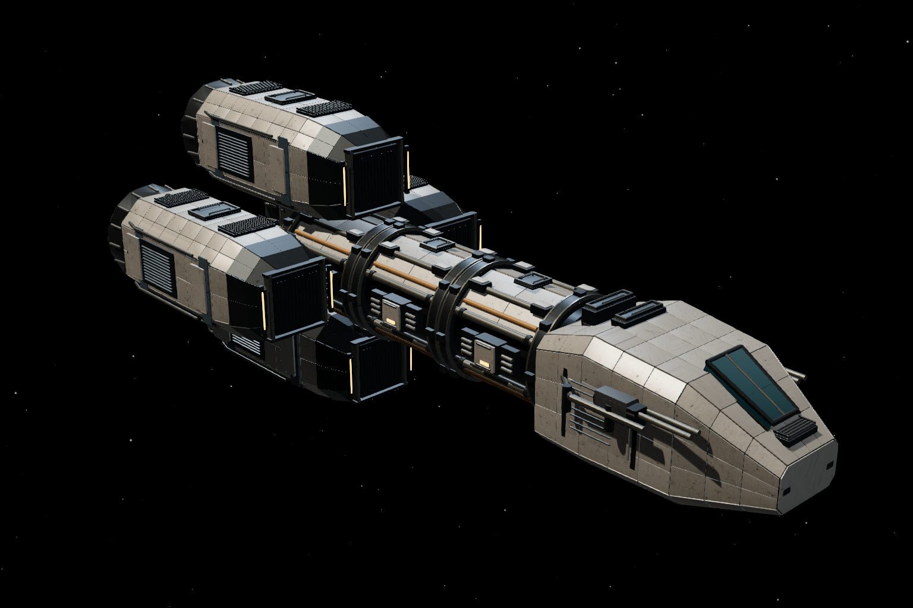
LOD 1 · 95,772 triangles LOD 2 · 9,410 triangles
LOD 2 · 9,410 triangles Warden
Inspect ship and switch LODs →
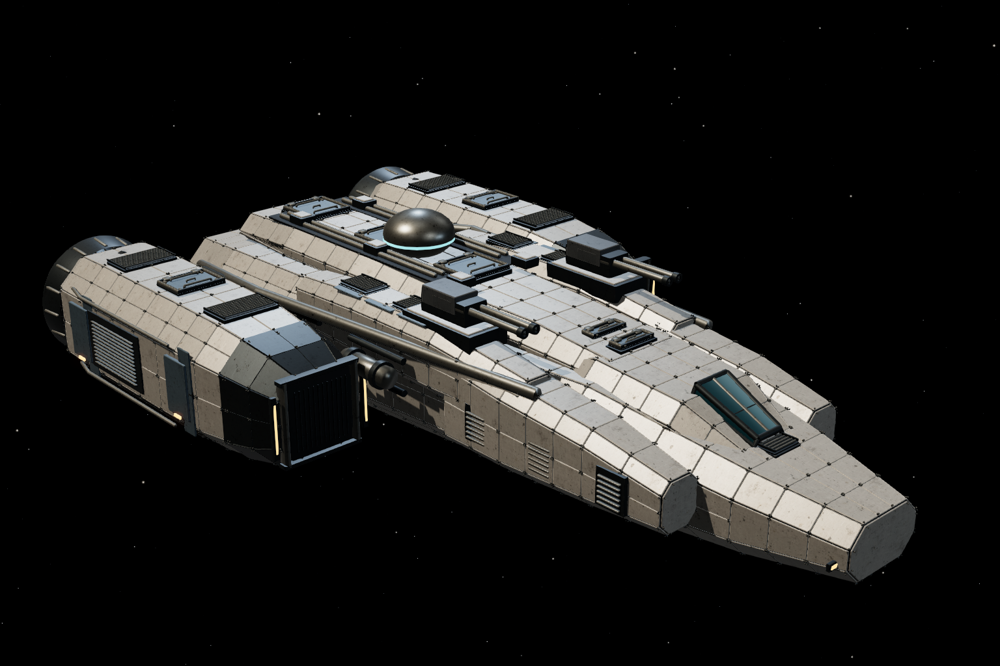
Full · 795,784 triangles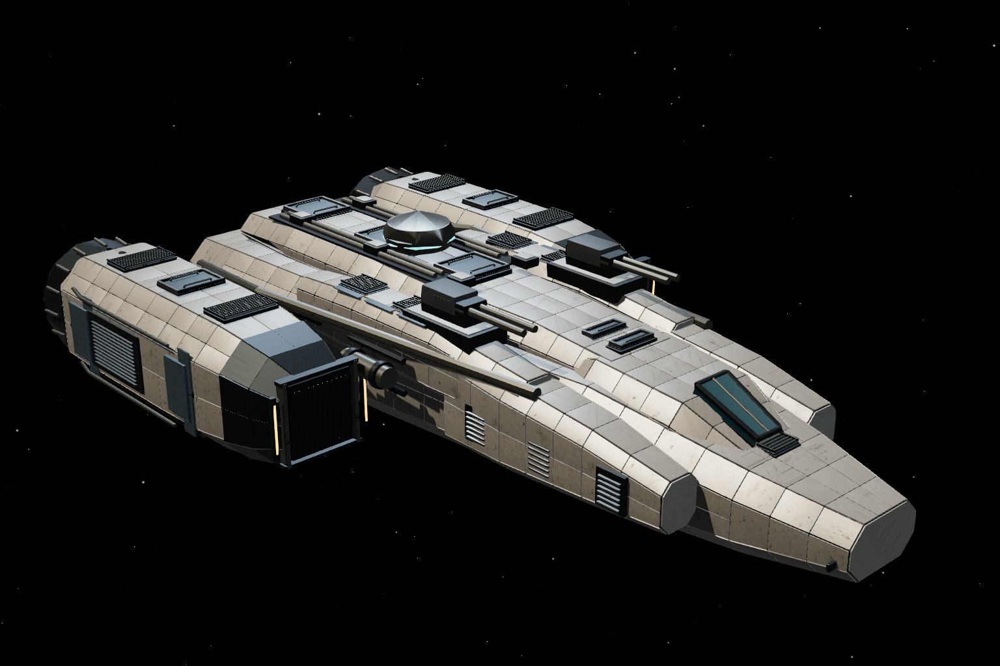
LOD 1 · 106,090 triangles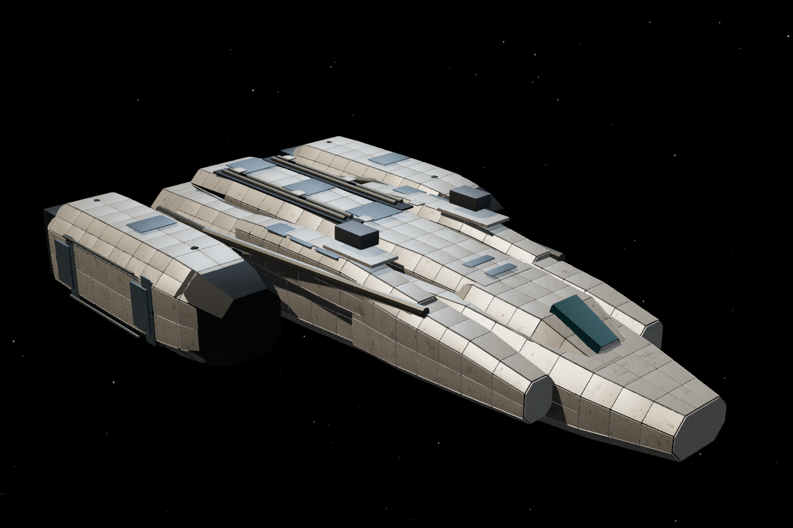
LOD 2 · 2,254 trianglesPilgrim
Inspect ship and switch LODs →
 Full · 879,036 triangles
Full · 879,036 triangles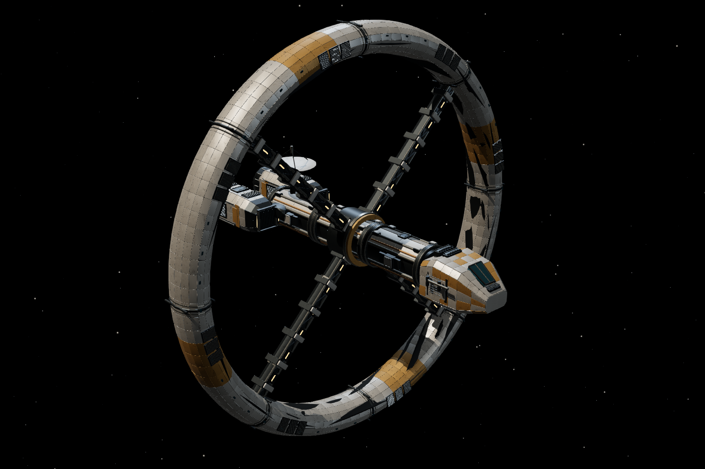
LOD 1 · 169,699 triangles LOD 2 · 4,302 triangles
LOD 2 · 4,302 trianglesShiv
Inspect ship and switch LODs →
 Full · 825,596 triangles
Full · 825,596 triangles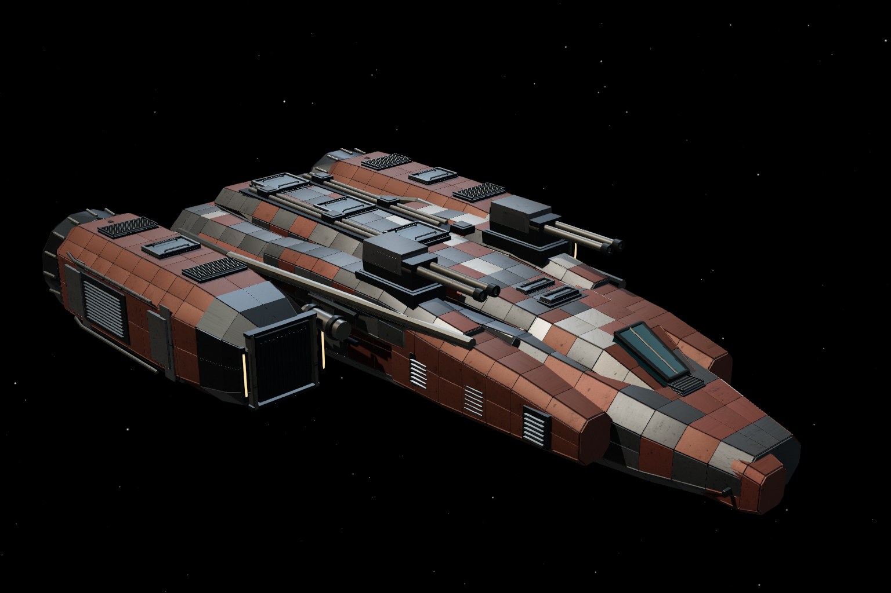
LOD 1 · 109,805 triangles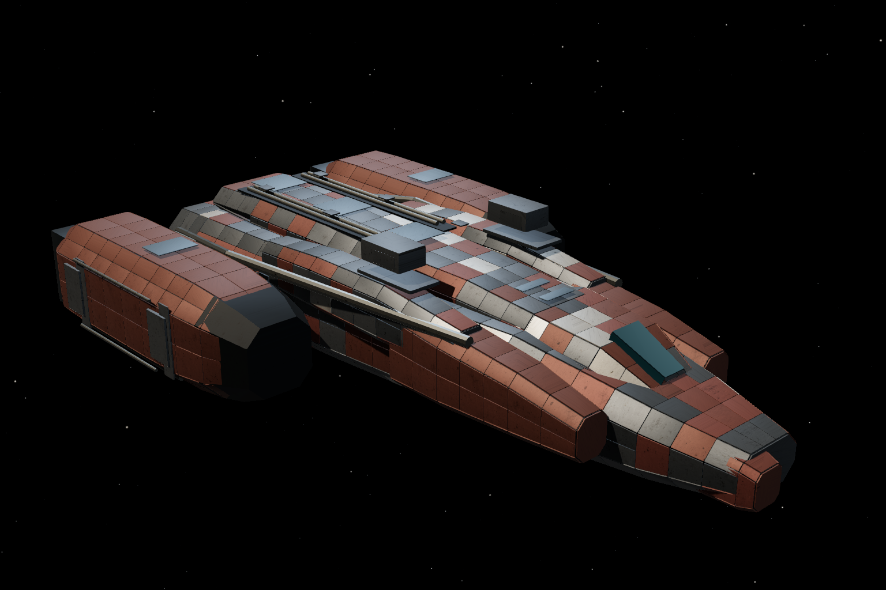
LOD 2 · 1,884 trianglesBastion
Inspect ship and switch LODs →
 Full · 1,350,582 triangles
Full · 1,350,582 triangles LOD 1 · 226,192 triangles
LOD 1 · 226,192 triangles LOD 2 · 12,094 triangles
LOD 2 · 12,094 trianglesSluice
Inspect ship and switch LODs →
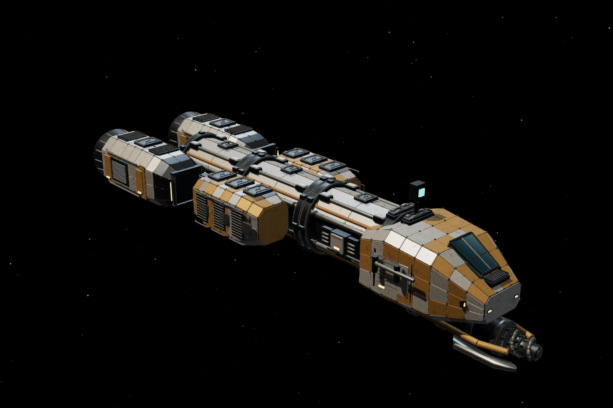
Full · 428,524 triangles LOD 1 · 72,687 triangles
LOD 1 · 72,687 triangles LOD 2 · 7,056 triangles
LOD 2 · 7,056 trianglesRampart
Inspect ship and switch LODs →
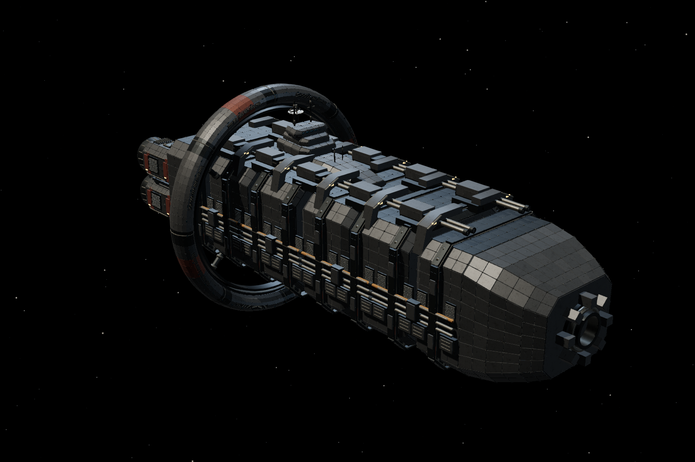
Full · 2,282,852 triangles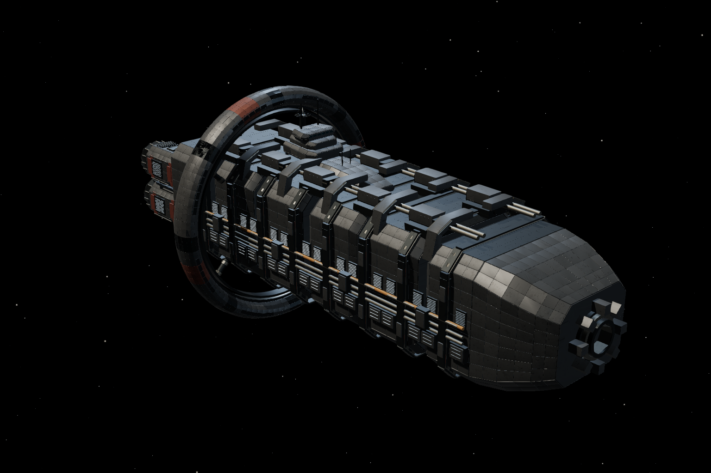
LOD 1 · 302,561 triangles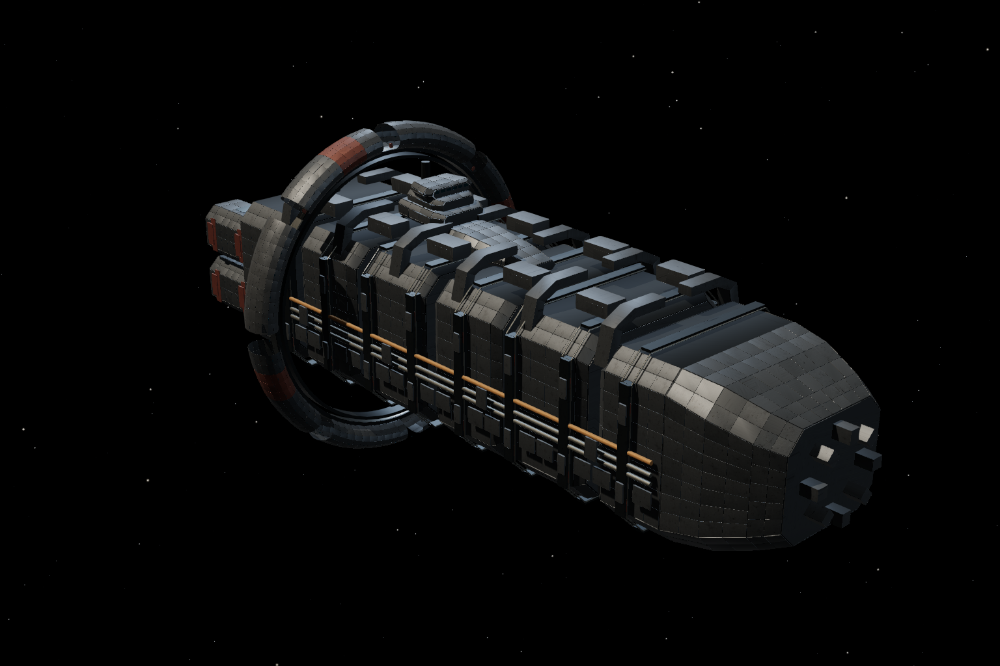
LOD 2 · 10,396 trianglesBastion · closed stern
 full
full reduced
reduced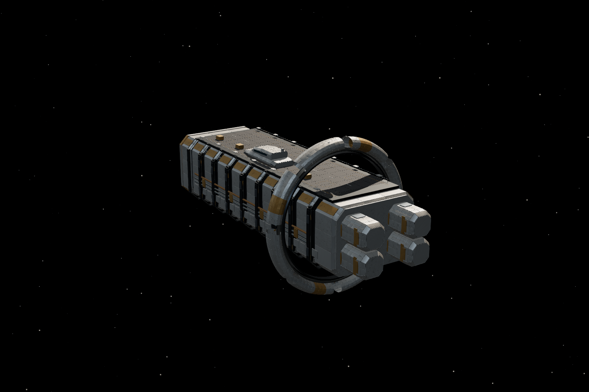
outline